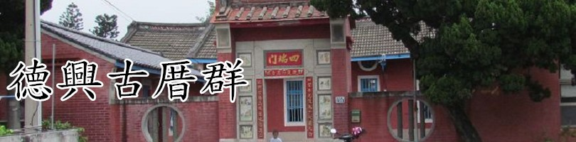
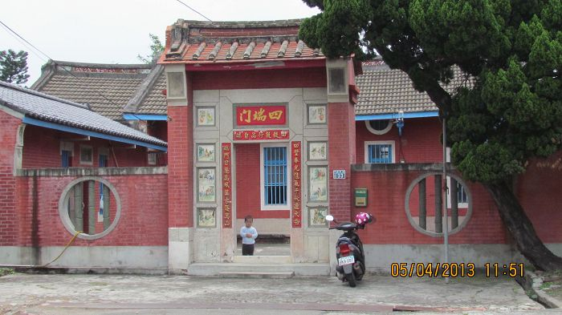
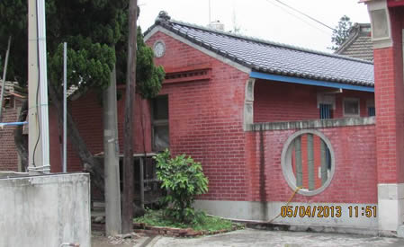
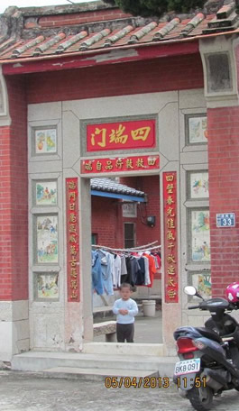

今天來到了德興村內最復古的建築—古厝
這古厝的原名是什麼呢?既然它位在德興村，
那是否會有人猜說是不是就如同標題那樣呢!
哈!不要懷疑，它就叫做〝德興古厝群〞

德興許氏古厝，位於德興路158號，渡台祖許應怡，渡台原居台南府城，後遷移至本鄉溝內村起居興家，應怡傳四子，分別是元山、元紹、元長與元服，書香傳 家，派下子孫出過貢生、國學生等，其中二房第三代許鍾俊進士及第，一門顯赫。約至三代後遷居德興村。許氏古厝為該派下大房所建。

雖然這些古厝已經有很久的歷史，但整體看起來還是像新的一樣，超漂亮的！

有一個可愛的小弟弟不知不覺地被我們的相機拍了下來，哈哈~~~
<--回德興村首頁